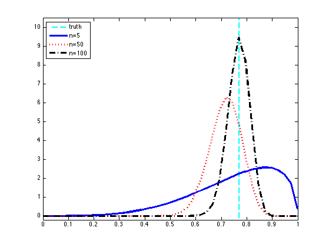

Sequential Bayesian Updating of a Beta-Bernoulli model.
In this example we draw samples from a Bernoulli distribution and then sequentially fit a Beta-Bernoulli model, plotting the posterior of the parameters at each iteration.
Contents
Sample
% This file is from pmtk3.googlecode.com setSeed(0); mu = 0.7; % 70% probability of success n = 100; % number of samples X = rand(n, 1) < mu;
Update & Plot
figure; hold on; box on; [styles, colors, symbols] = plotColors(); ns = [5 50 100]; betaPrior = [0.5, 0.5]; % uninformative prior xs = linspace(0.001, 0.999, 40); model = struct(); for i=1:numel(ns) n = ns(i); Xsubset = X(1:n); nsucc = sum( Xsubset); nfail = sum(~Xsubset); model.a = betaPrior(1) + nsucc; model.b = betaPrior(2) + nfail; p = exp(betaLogprob(model, xs)); name = sprintf('n=%d', n); plot(xs, p, [styles{i}, colors(i)], 'LineWidth', 3, 'DisplayName', name); end axis([0, 1, -0.2, 10.5]) h = verticalLine(mean(X), 'LineStyle' , '--' , ... 'LineWidth' , 2.5 , ... 'Color' , 'c' , ... 'DisplayName', 'truth' ); if ~isOctave uistack(h, 'bottom'); end legend('Location', 'NorthWest'); printPmtkFigure betaSeqUpdate